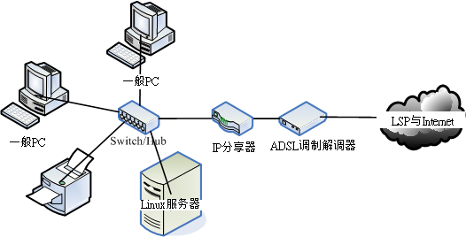

3.1 局域网络的联机
谈完了第二章网络基础后， 现在就让我们实际的来将家里或者小型企业内部的全部计算机给他连接起来吧！ 当然啦，我们这里主要介绍的是小型局域网络的架构，如果是比较大型的企业内部， 那么将『配线盘、线路设计、墙上网络孔』分别拆开施工的结构化布线会比较妥当。 不过，结构化布线并非本文所想要讨论的，如果你的企业有需求的话，可以向专业人士寻求协助， 举例来说，酷学园(http://phorum.study-area.org)的 ZMAN 兄就是一位很棒的网络布线专家。无论如何，先来将所有的网络硬件联机起来吧！
3.1.1 局域网络的布线规划
从前一章的数据探讨中，你现在应该已经知道局域网络的定义了。大部分狭义的定义中， 都将局域网络定位在一个以星形联机连接的实体网络中，再透过 IP 网段来连接在一起的情况。 所以啦，这个联机是怎么连接在一块的，以及 IP 网段是如何规划的，就显的非常重要啰！
记得以前听 ZMAN 大哥某场演讲的时候提到，网络布线是『数十年大计』中最重要的一环， 因为『服务器主机能力不够时换主机就好了，Switch 交换力不足时换 switch 就好了， 但如果布线不良，难道要拆掉房子将管线挖出来重新安装设定？』所以说， 最初规划的布线严谨度真的会影响到未来网络的分布情况啊！
所以说，如果你的企业『整栋大楼需要重新布线』时，真的非常建议你务必要找寻专业网络布线专家帮忙设计规划， 因为连一个小小的机柜配线箱都有大学问～设计的好的话，每部独立的主机要改线路、 要换插孔都变的很简单！而且主机到墙上插孔的距离也会变的很短，维护也会很方便！线段也会很美观！ 当然啦，如此一来，网络线材的选择也就不能够用太差的！而且网络布线经过折角区时，也需要特别留意施工吶。
但是本文讨论的是一些比较小的局域网络环境，这样的环境可以是在一间办公室内而已， 所以我们这里谈到的大多是比较单纯的布线状态，并没有考虑到办公室外部的环境， 所以参考本文时，请特别留意这种差异性喔！
在这样单纯的环境中，我们可以利用一个以 switch 为中心来串连所有设备的星形联机 (star topology) 架构来设计我们的局域网络啊！在这样的环境中你需要担心的是『那我的 Linux 服务器要放在那个地方？』会考虑 Linux 服务器是因为鸟哥假设你需要在你的局域网络内架设对 Internet 开放网络的服务！ 而 Linux 是否具有 Public IP 对于主机的维护与设定的复杂度有很大的影响，所以当然需要考虑啰！ 底下鸟哥以目前在台湾挺流行的 ADSL 利用电话线路上网的环境来说明几种联机状态。
在底下的环境当中，鸟哥假设我们仅有一条 ADSL 的对外联机，也就是说， 我们的 Linux 与一般 PC (不论何种操作系统) 都是透过同一条线连到 Internet 上面去的。
3.1.1-1 Linux 直接联网-与 PC 同地位
如果你使用的 ADSL 是多 IP 的条件 (例如拨接可以给予 2-8 个 IP 的情况)， 那么最简单的方式就是如下图的联机模式：
 图 3.1-1、Linux 服务器取得 public IP 的联机方式之一(具有多个可用 IP 情况)
图 3.1-1、Linux 服务器取得 public IP 的联机方式之一(具有多个可用 IP 情况)
在这种联机模式当中， Linux 与一般 PC 或打印机都是同等地位，并没有谁比较『大尾！』^_^ 如果不急着连上 Internet 时，那么每个设备都给予一个同网域的私有 IP 就可以进行网络联机的工作了，你也可以很快乐的使用打印机或者是网络上的芳邻等等工作。 此外， Linux 服务器也可以作为内部的文件服务器或者是打印机服务器等等。
当需要连上 Internet 时，每部计算机 (包括 PC 与 Linux 主机) 都可以自己直接透过拨接连上， 而由于拨接是在每部机器上面『额外增加一个实体的 ppp0 接口』， 此时，你的系统内就会有两个可以使用的 IP 了 (一个是 public 一个是 private IP)。因此， 拨接上网之后每部主机还是可以使用原有的局域网络内的各项服务，而无须更动原本设定妥当的私有 IP 。 这样的情况对于一般家庭使用者来说，可以算是最佳的解决方案啦！因为如果你的 Linux 主机挂点时， 其他个人的 PC 是不会被影响的！
不过这样的环境对于小型企业主来说，却不好管理。因为无法掌握每个员工实际上网的情况， 而且对于防火墙来说，『根本就是一个没有防火墙的环境』，所以， 是没有办法对员工进行任何实际网络的掌控的，并且由于网络内外部 (LAN 与外部环境) 并没有明确的分开，网管人员对于进入客户端的封包是没有任何管理的能力， 所以对于网络安全来说，是很难管控的一种环境啊！因此对于企业来说，不建议这种环境。
3.1.1-2 Linux 直接联网-与一般 PC 分开网域
如果你有多个可用的 public IP ，并且你的 Linux 服务器主要是提供 Internet 的 WWW 或 mail 服务， 而不是作为内部的文件服务器之用，那么将 Linux 服务器与内部的网域分开也是个可行的方法， 而且 Linux 拥有 public IP，在设定与维护上面也不困难，如下所示：
 图 3.1-2、Linux 服务器取得 public IP 的联机方式之二(具有多个可用 IP 情况)
图 3.1-2、Linux 服务器取得 public IP 的联机方式之二(具有多个可用 IP 情况)
所有的 LAN 内的计算机与相关设备都会在同一个网域内，所以在 LAN 内的传输速度是没有问题的， 此外，这些计算机要连出至 Internet 时，必须要透过 IP 分享器，所以你也可以在 IP 分享器上面设定简单的防火墙规则， 如果 IP 分享器可以换更高阶的设备时，那么你就可以在该设备上面架设规则较为完整的防火墙， 对于内部主机有相当程度的管理，并且好维护啊！
3.1.1-3 Linux 直接联网-让 Linux 直接管理 LAN
如果你不想要购买 IP 分享器的话，那么直接利用 Linux 服务器来管理就好了啊！那么你可以这样布线：
 图 3.1-3、让 Linux 管理 LAN 的布线情况
图 3.1-3、让 Linux 管理 LAN 的布线情况
这种情况下，不论你有多少个 IP 都可以适用的，尤其是当你只有一个 public IP 时，就非得使用这种方式不可了。 让 Linux 作为 IP 分享器的功能相当的简单，同时 Linux 必须具备两张网络卡，分别是对外与对内， 由于 Linux 依旧具有 public IP ，所以在服务器的设定与维护上相当的简单，同时 Linux 服务器可以做为内部网域对外的防火墙之用，由于 Linux 防火墙的效能挺不错加上设定也很简单，功能却也是很不错的！ 因此，网络管理人员也较能进行较完善的掌控，并且， Linux 服务器也要比高阶的硬件防火墙便宜多了！ ^_^ 鸟哥个人是比较喜好这种方式的联机啦！
不过，我们都知道『服务器提供的网络服务越单纯越好』， 因为这样一来主机的资源可以完全被某个程序所使用，不会互相影响，而且当主机被攻击时， 也比较能够立即了解是那个环节出了问题。但是如同图 3.1-3 的状况来说的话，由于内部的 LAN 是需要通过 Linux 才能联机出去，所以 Linux 挂点时，整个对外联机就挂了，此外， Linux 的服务可能就太复杂了点，可能会造成维护上的困难度。 但对于小型区网来说，图 3.1-3 这种架构还是可以应付的来的啦！
3.1.1-4 Linux 放在防火墙后-让 Linux 使用 Private IP
我们可以将 Linux 服务器放在 LAN 后面喔！瞎密？我们的 Linux 主机放在 LAN 里面？有没有搞错啊？没搞错啊～ 比较大型的企业通常会将他们的服务器主机放置在机房内，主要是在 LAN 的环境下， 再透过防火墙的封包重新导向的功能，将来自 Internet 的封包先经过防火墙后才进入到服务器， 如此一来可在防火墙端就砍掉一堆莫名其妙的侦测与攻击，当然会比较安全啊！ 这种架构还依防火墙的多寡而又可分为非军事区 (DMZ) 的配置，不过，太麻烦了～不建议初学者直接使用。 底下我们仅介绍较简单的架构来说明：
 图 3.1-4、Linux 主机放在 LAN 里面的布线情况
这里我们以一个较简单的图示来说明，所以利用的还是 IP 分享器，可能的话， 你可以将 IP 分享器换成 Linux 主机来架设防火墙，也是一个不错的选择啊！ 反正现在计算机天天在升级，升级后的旧配备其实就可以作为 Linux 防火墙之用了！ 反正防火墙又不需要什么硬盘与强效的显示或者 CPU， 只要有不错的网络接口就能够达到不错的防火墙效能了。
不过这里得再次的强调， Linux 服务器主机若放在 LAN 里面 (使用 private IP)，则当你要对 Internet 提供网络服务时， 防火墙的规则将变的相当复杂，因为需要进行封包转递的任务，在某些比较麻烦的协议当中， 可能会造成设定方面的困扰。所以，在你初接触 Linux 服务器时， 不建议新手使用这种联机架构，避免由于失去信心而没有动力学习～(@_@)。
每种联机的方式都有其适用的使用者群，所以没有那个是比较好的，完全是看你自己的网络环境而定喔！ OK！我们现在知道要连上以太网络组成的局域网络，就得要有网络卡、网络线、网络集中媒体(hub/switch)、 连上 Internet 的调制解调器等等，在这里鸟哥将防火墙、路由器等等设备归类为主机， 因为基本上，这些组件内部一定会含有一个网络卡，只是操作系统的精简程度与软件功能的不同就是了。 那么这些所需要的网络硬件又该如何挑选呢？
3.1.2 网络媒体选购建议
在开始底下的介绍之前，你必须要对于跳线、并行线、RJ-45 网络线、Hub/Switch 的优劣等等有一定程度的了解，请再前往第二章网络基础看一看。 此外，不在我们局域网络内的设备，例如调制解调器，那就得向你的 ISP 询问了！一般来说， 调制解调器是中华电信提供给用户的，然而由于『中华电信因为不同批次安装的调制解调器模块不同， 所以会有不一样的连接与线材处理方式！』(跳线与并行线的差异喔！) 所以请特别向你的 ISP 询问才行。底下主要针对局域网络内的网络媒体来进行介绍与说明。
主机硬件系统：考虑使用年限、省电、虚拟技术等
过去我们都觉得旧的计算机拿来安装 Linux ，作为一个 Linux server 挺不错。后来鸟哥发现，很多旧计算机其实已经超过使用年限， 硬要使用有点问题，因为电子零件恐怕会撑不了太久的运作时间。而且，某些时刻生产的主机其实非常耗电！现在我们都强调要节能减碳嘛！ 所以，可以购买省电型的计算机主机，并且 CPU 含有虚拟化能力的更好。如此一来，不但比较省电，而且一部主机可以透过虚拟化的功能， 仿真出多部操作系统同时运作的环境，真正达到节能减碳的目的，那样也是很好的选择呦！
不过，选购什么主机配备与该主机即将运作的服务其实是有关系的，例如防火墙系统与 DHCP 等服务并不需要很强的主机， 但是 Proxy 及 SQL 等服务器就得要强而有力的主机系统，甚至得要磁盘阵列的辅助会比较好！鸟哥在后续的章节所要介绍的服务， 大多仅是企业内部或者是外部很轻松的服务，并不需要什么强效的主机系统，因此目前的双核心入门级机种，已经非常棒了！ 所以啰，花太多时间在介绍主机硬件就变的没有什么意义！你只要记得，新购买主机时，最好选有伪指令集的 CPU 即可。
Linux 操作系统：考虑稳定、可网络升级、能够快速取得协助支持
你可以将目前的 distribution 分成两大类，一类是多功能新鲜货，例如 Fedora ， 一种是强调性能稳定但软件功能较旧的企业用途货，包括 RHEL, CentOS, SuSE 及 B2D 等！
一般来说，我们会建议你如果想要架设服务器时，尽量选择『稳定性较高的企业版』较佳， 因为功能新且强的版本例如 Fedora 由于太强调新鲜货，所以核心与软件的变动情况较为频繁， 那就很容易造成一些困扰，因为很多用户自行安装的软件可能无法在新的核心上面跑， 所以，只要核心一升级，哇！很多需要编译的软件就都需要再重新编译过！有点麻烦就是了。
由于鸟哥用惯了 RPM 以及 Red Hat 系统的关系，所以在这里推荐你使用 RHEL/CentOS/SuSE 这几个 Linux distributions，因为他够稳定且设定上面不难。不过，里面的软件版本可能就不会是最新的， 这点你可能就得要自行设法啰！比较特别的是 CentOS，他不但标榜完全相同于 RHEL ，并且可以直接透过 yum 这个软件进行完整版本的网络升级，既不会影响到原有的设定，升级时所花费的时间又短，所以， 目前鸟哥都是以这个版本来进行服务器的架设啊！
网络卡：考虑服务器用途、内建与否、驱动程序的取得等
一般来说，目前的新主机几乎都是内建 gigabit 的以太网络卡了，所以你不需要额外购买网络卡。 不过，使用内建的网络卡时，你得要注意到该网络卡是否为特殊的网络芯片，根据以往的经验，内建的网络卡通常是芯片较特殊的， 所以可能导致 Linux 预设的网卡驱动程序无法顺利的驱动该网络卡，那就比较累了～因为你必须要额外的安装网卡驱动程序之后， 才能够顺利的使用该款网络卡哩。
如果是想要作为 Linux 服务器的话，那么你的网络卡可能必须要购买好一点的。举例来说，某些主板内建便宜的 gigabit 网络接口，但越便宜的网络接口可能会造成损耗较多的 CPU 资源，如果能够购买类似 Intel/3Com 等知名品牌的 gigabit 适配卡，不但传输较为稳定，并且可以降低系统资源的耗费，是有一定程度的帮助的。另外，如果强调高速的话， 甚至可以选用 PCI-Express 的网络卡，而不使用传统的 PCI 接口。因为 PCI-Express 的传输带宽更高。
Tips: 你知道吗？鸟站 (http://linux.vbird.org) 使用的主机硬件是旧式的 AthlonXP 2000+， 内存也仅有 1.5G ，使用的网络卡则是早期的 3Com 3c905C 芯片，速度仅有 10/100 Mbps。但是，使用到目前流量传输是很顺畅的！ 不要说品牌迷思，有时产品的用料实在与否，很重要。

不过，如果是一般家用，或者是准备用来作为学习机之用的主机，那么万一网络卡芯片无法驱动时， 请先买个螃蟹卡 (芯片是 Real Tek 8139) 来作为练习之用， 因为 Linux 本身就支持 Real Tek 8139 的芯片，你不需要额外的驱动程序，这样会方便学习啊！ 而且该网络卡也很便宜(大卖场一片不到 200 块台币)。
**Tips:** 如果要玩 Linux 又想比较顺畅的玩弄 Linux 时，请不要坚持使用 Linux 捉不到的网络卡！否则那份失望的心情 ......会让你失去很多很多的耐性与信心啊～螃蟹卡最好认的地方在于其芯片上面有个类似螃蟹的 Logo ，以前鸟哥曾经在大卖场上面逛大街时，还『踢飞』过一整排螃蟹卡～便宜到都放在地上而已～ @_@
Switch/Hub：考虑主机数量、传输带宽、网管功能与否等
就如同第二章网络基础里面曾经谈到的， Hub 是共享媒体而 Switch 是具有独立带宽的非共享媒体。因此以效能以及带宽来看，当然是 switch 比较好用啊！ 不过，如果你是一般家庭用户，只是要作简单的上网等工作，是没有必要购买太好的 switch 的， 建议使用一般大卖场可以买到的 5 port 的 hub 即可 (差不多 500 块台币的就不错了)。
不过如果你常常在区网内传送大量的数据，例如一次传输就得要传送 GBytes 的数据时， 那么网络的整体速度需要很详细的考虑喔！包括网络卡最好使用 gigabit ， 当然中间的联机设备最好买支持到 gigabit 速度的 switch 啦！因为 10/100/1000Mbps 的 switch 要比 10/100Mbps 的设备快上十倍，速度可是差很多的啊！如果你的设备还需要更快时， 例如鸟哥之前服务的实验室内部的 cluster (丛集式计算机群) ，则购买的 switch 甚至需要支持 Jumbo frame 这种支持大讯框的硬件架构才行，否则速度上不来啊！
网络线：考虑与速度相配的等级、线材形状、施工配线等
在所有串连网络的设备当中，网络线是最重要，但是却也最容易被忽略～除了网络线的等级会影响到连接速度外，网络线所在处是否容易被压折？是否容易有讯号衰减？自己压制的 RJ-45 接头是否通过测试？网络线是否缠绕情况严重？都会影响到网络的传输优劣！所以，虽然我们常常讲要确认主机与 Switch 是否有连接成功可以看 switch 上的灯号，但是很多时候虽然灯号是亮的，不过由于网络线折损严重的问题， 也会导致联机质量不良喔！
一般来说，『个体户』与小型企业通常网络线是直接放在外部的，这种情况你发现网络怪怪的时，可以直接更换线路。 不过，如果是如同中大型企业将网络线直接埋在墙内或者是在管线当中，发现问题时，真的很麻烦～ 所以才需要专业人才的辅助啊！
Tips: 一般来说，越高等级的网络线，最好不要自行制作，因为一个小小的 RJ-45 接头的压制， 由于蕊线裸露程度的不同，就会影响到电子屏蔽效应的优劣了。Cat 5 等级的线材还可以自行压制， 比他还高等级的，最好还是买现成的吧！ ^_^
无线网络相关设备：考虑速度、标准、安全性等
现在的网络环境除了传统的有线网络之外，其实还有一个也是很常见的喔，那就是无线网络啦！ 无线网络会流行主要的原因除了笔记本电脑能力越来越强，使得很多朋友直接以笔记本电脑取代桌面计算机之外， 无线网络的速度目前已经可以达到 54 ~ 300 Mbps 那么快了 (802.11n 的标准而言)，对于一般只是上网看新闻与聊天的上班族来说， 这样的速度实在是非常快了 (一般的 ADSL 仅是 2M/256K bps 而已)， 所以要买无线网络设备 (含基地台与在 client 端的无线网卡) 来做成局域网络， 其实也是可以啦！而且还可以省去网络线的施工呢！
不过，无线网络最大的问题常常在于『无线的安全性』方面，因为是无线的设备， 所以『基地台如果没有做好防备措施的话，常常会导致 LAN 内的主机数据被窃取』， 这可是非常大的问题喔！可千万不要小看这个问题，吃上官司常常是由于忘记网络安全啊！ 记得购买无线网络基地台时，注意他可否『限制 MAC 』，如此一来，至少可以锁网卡， 只让指定的网卡可以使用你的无线基地台，比较安全啦！
关于其他配件：
事实上，整个网络环境可不止上头提到的这些咚咚而已，还包括硬件防火墙、路由器、网桥等等的， 当然，这些设备贵的话也有上百万的，但你的环境是否需要用到这么好的设备，那就见仁见智啊～此外， 为了环境的美观与生活的便利，你总不希望走在路上被网络线所绊倒，也不希望因为网络线绊倒你导致网络媒体掉落， 结果........损失了一堆 $$ 吧～所以啰，在网络线的转角处必须特别注意线材的保护， 在平面地上则需要特别使用压条给予固定，在牵线施工的时候尽量让线材沿着墙角或者是墙面上的既有物品， 如此则除了保持工作场所的美观之外，还能够增加工作场所的安全性啊！ ^_^
此外，『计算机上网的速度并非完全取决于网络带宽』举例来说， 玩在线游戏时，大家都以为网络带宽需要很高规格，其实....根本不需要！因为 3D 联机游戏最主要的速度瓶颈应该是在于『3D 显示』而不是网络。这是因为网络仅传送一些数据给你的主机， 而你的主机再在自己的硬盘里面将图形取出，并且使用 3D 绘图卡将画面绘制到你的屏幕上。 所以，显示速度或者是 CPU 不够力时，才会发生联机游戏的顿点。否则就是联机游戏服务器本身的负载 (loading) 太大，导致主机响应有较多延迟，就产生 lag (顿点) 的问题啦！
另外，包括你主机使用的数据是否具有快速的传输接口也有关。举例来说，如果你的主机使用 USB 1.1 (最大传输 12Mbps)，但网络速度可达 10/100/1000Mbps ，那当你要在远程使用这部计算机的 USB 装置内的数据时，最大速度会是『 12Mbps 』，也就是最慢的那一个组件。所以啊， 网络速度慢的时候，不要以为只要增加网络带宽就好了，要确切的找出问题啊！
事实上，选购网络媒体所需要考虑的参数实在太多了，并且没有一定的依据，完全与使用者的使用环境与未来功能性有关。 不过，如果着眼在单纯的硬件速度上面的话，那么选购时考虑『我的网络速度可接受的最低速度为何？』去考虑吧！ 如果行有余力的话，再来考虑『我的环境需要多稳定的设备来达成？』其他的，那就得要靠你自己摸索啰！ ^_^